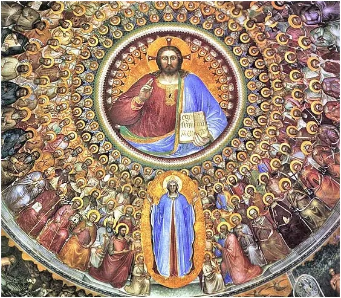
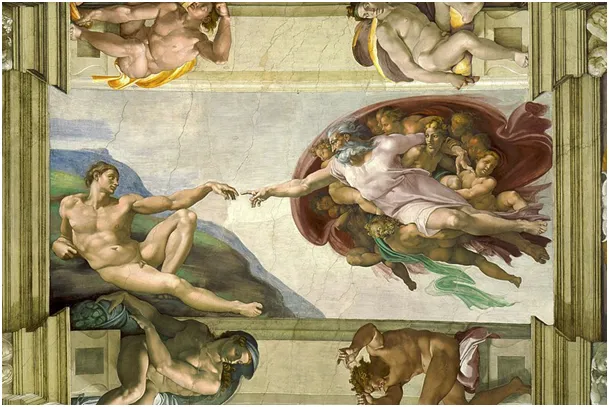

Niezwykły, trupi kalendarz z PRL-u
Pamiętam kartonowy kalendarz dołączony do codziennej gazety pod koniec lat siedemdziesiątych, czyli w okresie schyłkowego Gierka. Bezpieka już wiedziała, że kredyty nie dają zwrotu kapitału i szykuje się plajta. Inwestycje były bardzo nowoczesne, tylko produkcja szła za bezcen albo do ZSRR, albo na zachód. Byliśmy wtedy "Chinami" zachodu, polski robotnik produkujący najlepsze na świecie turbiny, czy precyzyjne urządzenia pomiarowe zarabiał 12 dolarów miesięcznie, amerykańskie jeansy kosztowały w Pewexie 17 dolców. Pojawiły się kartki na cukier i walka o rząd dusz przybrała na sile aby odwrócić uwagę od powszechnej biedy.
Zapamiętałem ten kalendarz, bo poza czerwonymi świętami i czarnymi dniami naszymi powszednimi miał jeden wyjątkowy dzień wydrukowany na fioletowo. Kto wie cokolwiek o poligrafii, ten rozumie, że zrobienie tego jednego fioletowego dnia wymagało zachodu i środków.

Ten fioletowy dzień to był oczywiście 1 listopada i uwaga! Nazywał się "Święto Zmarłych". Kompletne kuriozum i doskonały przykład jak materialistyczny marksizm walczy o duchowe obszary ludzkiej egzystencji. 1 listopada to święto Wszystkich Świętych, czyli zbawionych i żyjących w raju na wieki. Jest to dzień mający nam przypominać o zwycięstwie Boga nad śmiercią. Zaganianie w tym dniu słabo wierzących ludzi na cmentarze to przewrotny fortel. Mamy dziś radosne święto. Wizytę na grobach bliskich możemy złożyć w dniu 2 listopada w "Dniu Zadusznym", czyli w dniu Wspomnienia Wszystkich Wiernych Zmarłych.

Musimy krok po kroku odkopywać nasze tradycje i święte rytuały i zakopywać komunistyczne zabobony. Już niedługo czas na bojkot karpia, ryby którą we wczesnym PRL-u skarmiano lud na święta z braku szlachetnych gatunków. Osobiście zrobię dorsza w pomidorach i doradę z rusztu.
Świąteczne czytanie Mateusz 5, 1-12a:
"Jezus, widząc tłumy, wyszedł na górę. A gdy usiadł, przystąpili do Niego Jego uczniowie. Wtedy otworzył swoje usta i nauczał ich tymi słowami:
«Błogosławieni ubodzy w duchu, albowiem do nich należy królestwo niebieskie.
Błogosławieni, którzy płaczą, albowiem oni będą pocieszeni.
Błogosławieni cisi, albowiem oni na własność posiądą ziemię.
Błogosławieni, którzy łakną i pragną sprawiedliwości, albowiem oni będą nasyceni.
Błogosławieni miłosierni, albowiem oni miłosierdzia dostąpią.
Błogosławieni czystego serca, albowiem oni Boga oglądać będą.
Błogosławieni, którzy wprowadzają pokój, albowiem oni będą nazwani synami Bożymi.
Błogosławieni, którzy cierpią prześladowanie dla sprawiedliwości, albowiem do nich należy królestwo niebieskie.
Błogosławieni jesteście, gdy ludzie wam urągają i prześladują was, i gdy mówią kłamliwie wszystko złe na was z mego powodu. Cieszcie się i radujcie, albowiem wielka jest wasza nagroda w niebie»."
Po tych słowach widzę bezbronnych ludzi zamordowanych na Woli w okupowanej warszawie w 1944 i dziś w Gazie, w miejscach gdzie Jezus wielokrotnie bywał.
Paweł Klimczewski